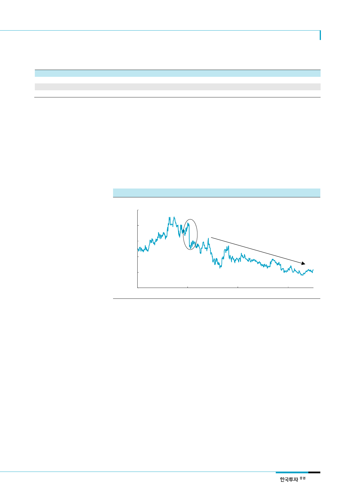

현대글로비스(086280)
<표 3> 공정거래법 개정안 발의 주요 내용
현행법
지분비율은 시행령에 위임
상장회사 30% 비상장회사 20%
직접 보유 지분만 산정
공정위 개정 안
지분비율은 시행령에 위임
구분없이 20%
간접 지분도 포함
자료: 국민의당, 더물어민주당, 한국투자증권
김동철 의원 안
지분비율 법률에 직접 규정
구분없이 10%
직접 보유 지분만 산정
제윤경 의원 안
지분비율 법률에 직접 규정
구분없이 20%
간접 지분도 포함
채이배 의원 안
지분비율 법률에 직접 규정
구분없이 20%
간접 지분도 포함
현대차 그룹은 미봉책인 일부
지분 매각보다 근본적 대안을
제시할 가능성 높아
현대차 그룹은 2015년 일감몰아주기에 대응해 오너일가의 지분을 매각했다. 그러나 당시
우회적인 규제 회피 논란과 승계 재원인 잔여 지분가치 하락, 투자자 우려 등의 문제가 불
가피했다. 이에 현대차 그룹은 과거에 사용했던 미봉책에서 벗어나 근본적인 대응과 경영
권 승계를 고려한 활용방안을 동시에 검토할 가능성이 높다. 추가 지분 매각을 검토할 수
있겠지만 2015년에 이어 오너 일가의 연이은 지분 매각은 쉽지 않고, 주가가 하락할 경우
남은 20%를 경영권 승계재원으로 활용하는 가치 또한 감소하며, 무엇보다 정부의 규제 강
화를 우회적으로 피하는 방안이라는 점에서 실행 이후에도 부담이 클 것이다. 따라서 현
대차 그룹은 지분가치를 충분히 활용하면서 경영권 승계를 추진할 가능성이 높다.
[그림 1] 현대글로비스 주가 추이
(원)
350,000
오너일가 지분(13.39%) 매각
300,000
250,000
오너 프리미엄 소멸과 지배구조개편
노이즈로 주가는 추세적 하락
200,000
150,000
100,000
2014-01-02
자료: Quantiwise, 한국투자증권
2015-01-02
2016-01-02
2017-01-02
글로비스, 삼성SDS처럼
순수 사업회사로 재평가
2. 삼성SDS 사례를 통해 살펴본 글로비스
역설적으로 우리는 글로비스의 지배구조 변화를 긍정적으로 평가하는데, 오랜 기간 글로
비스 주가를 움직여온 지배구조 노이즈에서 벗어나 순수 운송회사로 재평가될 것으로 예
상되기 때문이다. 삼성전자의 지주 전환 포기 선언 후 사업가치가 재조명된 삼성SDS의
사례를 참고할 필요가 있다. 삼성SDS는 상장 이후 1) 삼성전자/삼성전자 홀딩스 합병, 2)
물류사업 분할, 3) 오너 일가의 지분 활용 방안이 주가를 좌우했다. 아이러니하게도 삼성
SDS 주가는 4월 27일 삼성전자의 지주전환 포기 선언 이후 랠리를 이어갔는데, 지배구조
이슈에서 벗어나서 순수 사업회사로서의 pure play 평가가 진행되었기 때문이다. 삼성
SDS에 대한 예측 가능성이 높아짐에 따라 시장의 관심이 블록체인, AI, 물류 captive 확
대 등의 사업 경쟁력과 보유 현금활용 방안으로 이동했다. 이재용 부회장의 지분 2.05%
매각과 삼성전자의 지주 전환 포기 선언 이후에도 삼성SDS 실적은 사업가치에 기반해 꾸
준히 개선됐고, 시장은 지배구조 활용방안보다 삼성SDS의 영업가치에 주목하기 시작했다.
3